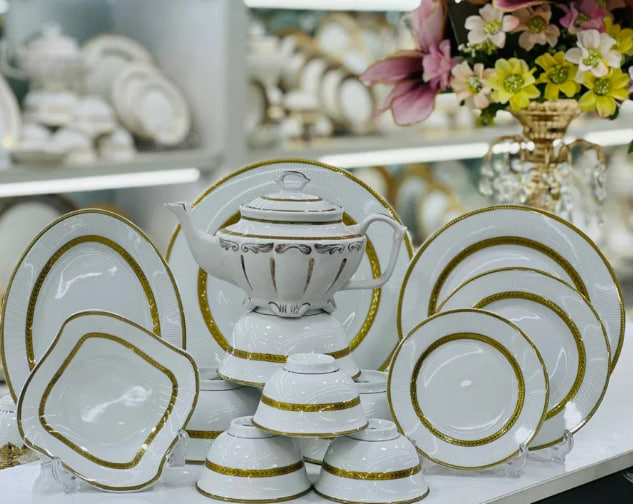

1-Sarlavha
BIZ HAQIMIZDA
Chinni idishlar ishlab chiqaradigan firmalar haqida ma'lumot beraman. Quyidagi mashhur kompaniyalar chinni idishlar ishlab chiqaradi: Royal Doulton - Buyuk Britaniyada joylashgan, yuqori sifatli chinni va porselen idishlari bilan tanilgan. Lenox - AQShda joylashgan, an'anaviy va zamonaviy chinni idishlar ishlab chiqaradi. Ularning mahsulotlari ko'pincha to'y va boshqa maxsus tadbirlarda foydalaniladi. Wedgwood - Shuningdek, Buyuk Britaniyadan, tarixiy va san'atkorona dizaynlari bilan mashhur. Villeroy & Boch - Germaniya brendi, keng assortimentdagi chinni idishlar va oshxona anjomlari bilan tanilgan. Noritake - Yaponiya brendi, yuqori sifatli porselen va chinni idishlar ishlab chiqaradi, ko'pincha zamonaviy va klassik dizaynlari bilan.
Eng sifatli chinni idishlarni ishlab chiqaruvchi firmalardan biri sifatida Wedgwood va Royal Copenhagen ni keltirish mumkin. Ikkala brend ham uzoq tarixga ega va yuqori sifatli materiallar bilan an'anaviy san'atkorona uslubda ishlab chiqarilgan idishlari bilan tanilgan. Wedgwood - klassik va zamonaviy dizaynlari, shuningdek, nozik materiallari bilan mashhur. Royal Copenhagen - Daniyada joylashgan bo'lib, yuqori sifatli porselen idishlari, ayniqsa, qo'l bilan chizilgan naqshlari bilan ajralib turadi. Shuningdek, Noritake va Villeroy & Boch ham yuqori sifatli mahsulotlar bilan tanilgan. Ushbu brendlarning mahsulotlari ko'pincha to'y va boshqa maxsus tadbirlarda tanlanadi. Agar sizga ma'lum bir brend yoki mahsulot haqida ko'proq ma'lumot kerak bo'lsa, xabar bering!